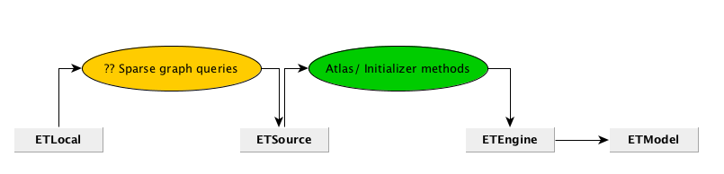

class: center, middle # ETLocal ## Meeting --- # Agenda 0. Preface 1. What is the core problem of ETLocal? 2. Who's part of the ETLocal team? 3. Current trajectory --- # Preface Provinces, municipalities, districts and neighborhoods have their own unique questions for their energy systems. ETLocal provides a way to get meaningful insight into their current situation and allows to customize and create stable, transparent present situations for usage inside of ETModel. --- class: center, middle # What is the core problem of ETLocal? --- # Who's part of the ETLocal team? - What is your role within the team? - What is your added value? - What is your responsibility? --- # Current trajectory (scoping)  **Open questions:** - How do we connect values from ETLocal to the initializer methods in ETSource? - Anthony and me are discussing this [here](https://github.com/quintel/atlas/pull/119/files). - How do we keep this process stable? --- # Next steps In the coming two weeks I'll implement the basics of the 'Sparse graph query'. This will make the connection between ETSource and ETLocal.